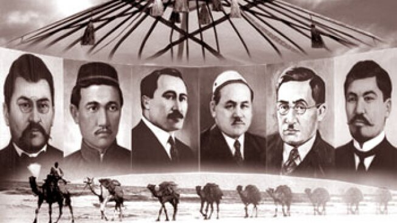
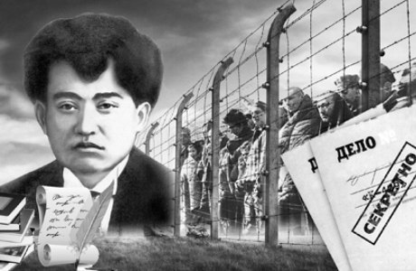

Мағжан Жұмабаев Бекенұлы - Мағжан (Әбілмағжан) Бекенұлы 1893 жылы 25 маусымда Солтүстік Қазақстан облысы, қазіргі Мағжан Жұмабай ауданы, Сасықкөл жағасында дүниеге келген. Алаш қозғалысының қайраткері, ақын, қазақ әдебиетінің жарық жұлдызы. Мағжанның атасы – Жұмабай қажы. Әкесі Бекен саудамен айналысқан дәулетті адам болған. Анасының есімі – Гүлсім. Мағжан ауыл молдасынан сауатын ашып, 1905 – 1910 жылдары Қызылжардағы (Петропавл) №1 мешіт жанында белгілі татар зиялысы, мұсылман халықтарының азаттығы жолында күрескен М.Бегишевтің ұйымдастыруымен ашылған медреседе оқыды. Медреседе Бегишевтен Шығыс халықтарының тарихынан дәріс алды, қазақ, татар әдебиеттерін, Фирдоуси, Сағди, Хафиз, Омар Һайям, Низами, Науаи секілді шығыс ақындарының дастандарын оқып үйренді. Баспадан 1909 жылы шыққан Абай өлеңдерін оқып, “Атақты ақын, сөзі алтын хакім Абайға” деген өлең жазды. 1910 – 1913 жылдары Уфа қаласындағы “Ғалия” медресесінде білім алды. Онда татар жазушысы Ғ.Ибрагимовтен дәріс алып, белгілі қайраткер С.Жантөринмен тығыз қарым-қатынас орнатады, болашақ көрнекті жазушы Б.Майлинмен танысады. Ибрагимовтің көмегімен 1912 жылы Қазан қаласындағы Кәрімовтер баспасында “Шолпан” атты тұңғыш өлеңдер жинағы басылып шығады. “Садақ” журналын шығаруға қатысады, оған өзінің өлеңдерін жариялайды. 1913 – 1916 жылдары Омбы мұғалімдер семинариясында оқыды. “Бірлік” ұйымы жұмысына белсене араласып, “Балапан” қолжазба журналын шығаруға қатысады.
Ә.Бөкейхан, А.Байтұрсынұлы, М.Дулатұлы секілді алаш қайраткерлерімен байланыс орнатып, “Қазақ” газетіне өз өлеңдерін жариялайды. 1917 жылы Ақпан төңкерісінен кейін қалыптасқан саяси жағдайға сай қоғамдық өмірге белсене араласып, Ақмола облыстық қазақ съезін өткізуді ұйымдастырушылардың қатарында болды. Осы жылы сәуірде Ақмола облысы қазақ комитеті құрамына сайланды. Мәскеу қаласында өткен Бүкілресейлік мұсылман съезіне қатысты. Бірінші жалпықазақ съезінің шешімі бойынша Бүкілресейлік Құрылтай жиналысына депутаттыққа кандидат ретінде ұсынылды. “Алаш” партиясының Ақмола облысының комитетінің мүшесі болды. “Үш жүз” партиясы өкілдерінің жалған айыптауымен бір айға жуық абақтыға отырып шықты. Екінші жалпықазақ съезіне делегат ретінде қатысып, онда оқу мәселесі бойынша құрылған комиссияға төрағалық етті. 1918 – 1919 жылдары Петропавл уездік земство басқармасында қызмет етті. 1919 – 1923 жылдары Ақмола губерниялық “Бостандық туы” газетінде, “Шолпан”, “Сана” журналдарында, “Ақжол” газетінде қызмет істеп жүріп, халық ағарту жұмысына белсене араласады. Сол кезеңде қалың қауымға таныс поэмасы “Батыр Баянды” жазып, жарыққа шығарады. 1923 – 1927 жылдары Мәскеуде Жоғары әдебиет-көркемөнер институтында оқиды. Онда орыс әдебиетін, Батыс Еуропа әдебиетін терең зерттеп, орыс мәдениет қайраткерлерімен жете танысып, көпшілігімен достық қарым-қатынаста болады. Мәскеуде оқып жүргенде оның шығармалары орынсыз сынға ұшырады. 1924 жылы 24 қарашада Мәскеу қаласындағы Шығыс еңбекшілері коммунистік университетінде қазақ жастарының жерлестік ұйымында жиналыс өтіп, олар Мағжанның 1922 жылы қазанда, 1923 жылы Ташкентте басылып шыққан жыр жинақтарын талқыға салды. Онда ақын шығармаларын теріске шығаратын қаулы қабылданды. Бұл қаулы “Еңбекші қазақ” газетінің 1925 жылы 14 ақпандағы санында басылды. Орынсыз сыннан көңілі жабыққан ақын “Сәлем хат” деген өлең жазды. Ол “Тілші” газетінде жарияланды. “Еңбекші қазақ” газетінің 1924 жылы 19 желтоқсанындағы санында С.Мұқановтың “Сәлем хат жазған азамат Мағжан Жұмабайұлына” деген ескертпемен “Сәлемге сәлем” деген жауап өлеңі басылды. Жаңа құрылысқа, жаңа тұрмысқа қатысты нақтылы өлең жазбаса да, “уралап айқайламадың” деген кінәмен, тап күресіне белсене араласып, кедей сөзін сөйлемедің деген айыппен Мағжан қатаң сынға алынды. Ақын 1927 – 1929 жылы Бурабайда, одан соң Қызылжарда оқытушылық қызметтер атқарады. 1929 жылы Жұмабайұлы “Алқа” атты жасырын ұйым құрғаны үшін деген айыптаулармен Мәскеудегі Бутырка түрмесіне қамалып, 10 жыл айдауға кесіледі. 1936 жылы М.Горький мен Е.Пешкованың араласуымен бостандық алып, Қазақстанға қайтады.
Петропавл қаласында мектепте орыс тілі мен әдебиетінен сабақ беретін мұғалім болып жұмыс істейді. Көп ұзамай қалалық оқу ісінің меңгерушісі оны саяси себептерге байланысты деген айыппен мұғалімдік қызметтен босатады. 1937 жылы наурызда мағжан Бекенұлы Алматы қаласына келеді келеді. Аударма ісімен айналысады. 1938 жылы қайтадан қамауға алынып, ату жазасына кесілді.